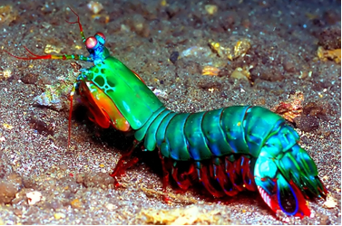
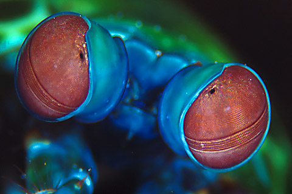
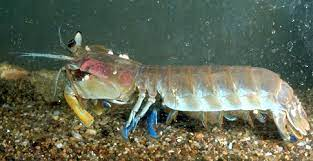

Fatos sobre o Stomatopoda
Informacoes gerais sobre o bichinho
O Stomatopoda ou Odontodactylus scyllarus como é conhecido em seu nome cientifico, ou ainda popularmente no Brasil como lacraia-do-mar, é uma ordem de crustácios marinhos da subclasse Hoplocarida que reúne 400 espécies.
| Tabela de Classificacao Stomatopoda | |||||
|---|---|---|---|---|---|
| Reino | Filo | Subfilo | Classe | Subclasse | Ordem |
| Animália | Arthropoda | Crustacea | Malacostraca | Hiplocarida | Stomatopoda |
Os olhos mais potentes
O Stomatopoda é um animal marinho que visualmente é como uma mistura de camarão e louva-deus apesar de ser um parente próximo de caranguejos e lagostas. Seus olhos possuem características muito distintas dos outros animais. Assim como nós eles veem as cores com o auxilio de proteinas sensiveis a luz, chamadas de opsinas. As opsinas formam a base dos pigmentos visuais que reagem a diferentes comprimentos de onda da luz, o que permite ver cores diferentes.
O que comem, onde vivem, veja hoje no...
Os Stomatopodas podem apresentar uma grande variação de tamanho, de alguns milímetros podendo chegar a 40 cm nas espécies maiores. Eles vivem em fundo consolidado, lodoso ou ainda arenoso, onde cavam seus buracos ou aproveitam-se dos orifícios deixados por outros animais para neles se instalar. São animais exclusivamente carnívoros, alimentando-se de camarões, caranguejos, moluscos, peixes e até mesmo outros da mesma ordem.